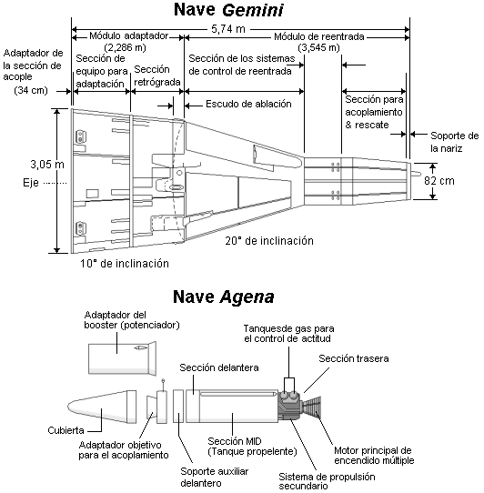

El Programa Gemini fue el segundo programa espacial tripulado de los Estados Unidos, desarrollado a principios de la década de 1960 en el marco de la carrera espacial con la Unión Soviética. El proyecto comenzó en 1965 después de que la agencia espacial estadounidense NASA finalizara su primer programa de vuelos espaciales: el pionero programa Mercury, el cual había logrado colocar en órbita terrestre a los primeros astronautas estadounidenses. El programa Gemini, a diferencia de su antecesor y su subsiguiente continuación con el Programa Apolo, no produjo tanta euforia en la opinión pública a pesar de que los desarrollos alcanzados en este proyecto serían de vital importancia para el desarrollo de las futuras misiones Apolo y la meta de llevar al ser humano a la Luna.
El programa Gemini fue oficialmente anunciado al público el 3 de enero de 1962 cuando el programa Apolo ya estaba en una avanzada etapa de desarrollo. Su meta general fue ganar experiencia en la exploración espacial para poder llevar al ser humano a la Luna antes de que finalizara la década, como había anunciado el presidente John Fitzgerald Kennedy en su famoso discurso en la Universidad Rice, en septiembre de 1962. Tenía como objetivos puntuales practicar maniobras y conocer la capacidad de resistencia de los astronautas, así como de las naves. Igualmente era necesario probar técnicas de acoplamiento y alineación así como realizar múltiples ejercicios extravehiculares (EVA) o "paseos espaciales".
El propósito principal del programa Gemini era demostrar las posibilidades de encuentro espacial y acoplamiento que serían usadas durante las misiones Apolo cuando el módulo lunar se separara del módulo de comando en órbita alrededor de la Luna, y posteriormente se reuniría con la nave otra vez después de que los astronautas dejaran la superficie lunar. Otro de los objetivos de las misiones Gemini era el de extender la permanencia de los astronautas en el espacio hasta dos semanas. Esto es incluso más de lo que requerían las misiones Apolo.
Durante las misiones Gemini los vuelos espaciales se convirtieron en rutinarios con 10 despegues desde las plataformas de lanzamiento ubicadas en Cabo Cañaveral, Florida en menos de 20 meses. Durante este programa, el Centro de Vuelos Espaciales (llamado Centro espacial Lyndon B. Johnson desde 1973) en las afueras de Houston, Texas, actuaría como Control de Misión.
Las operaciones de vuelo eran eficientes y rápidas debido a las breves ventanas de vuelo (el tiempo adecuado para un lanzamiento), que en el caso de la ventana para la Gemini XI duró solamente 2 segundos, tiempo establecido para un encuentro exitoso con las naves objetivos ubicadas en órbita.
La nave Gemini era una versión mejorada de las Mercury y originalmente habían recibido el nombre de Mercury Mark II. Las mejoras se dieron tanto en el tamaño como en las capacidades de control. Las Gemini tenían un peso de más de 3.628,72 kilogramos, el doble de las Mercury. Pero por otra parte, a pesar de tener un aumento en el espacio de cabina del 50% esta debía ser ocupada por dos astronautas en vez de uno como en las misiones Mercury. Otra de las diferencias de las naves Gemini es que poseían asientos eyectables en reemplazo de la torre de salvamento de las Mercury, además poseían mayor espacio de almacenamiento para las misiones de larga duración, las cuales requerían células de combustible en reemplazo de baterías para la generación de energía eléctrica.
